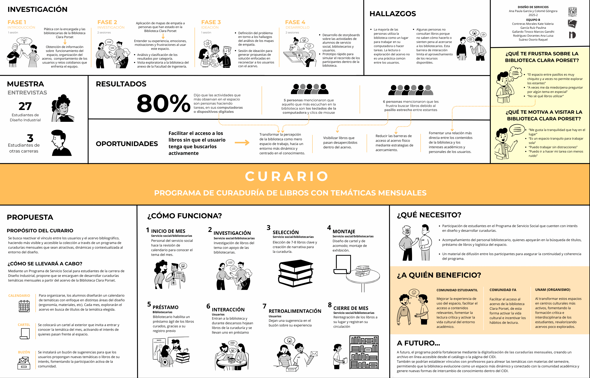
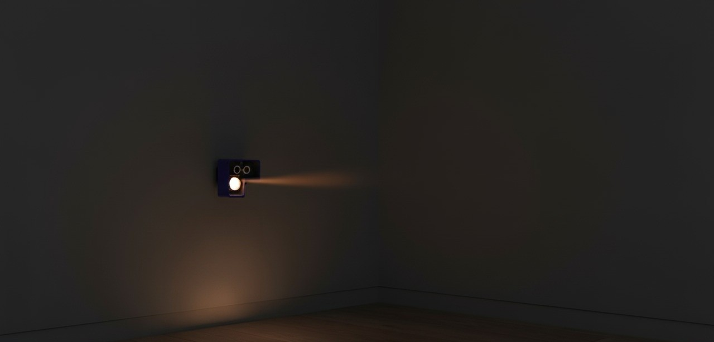

Estudios de Caso

Service Design · UX Research
Curario
Curaduría de libros en biblioteca académica. Investigamos por qué el 80% de los usuarios no tocaba el acervo y diseñamos un sistema humano para cambiarlo.

Inclusive Design
SAM (MUNAL)
Sistema de Advertencia Multisensorial. Entendimos la brecha visual en museos y transformamos una advertencia en una experiencia inclusiva.

Product Design
CICLO
Divertidor para primeras infancias. Diseño de un juego de parque intuitivo para fomentar la motricidad libre y la exploración sin instrucciones.